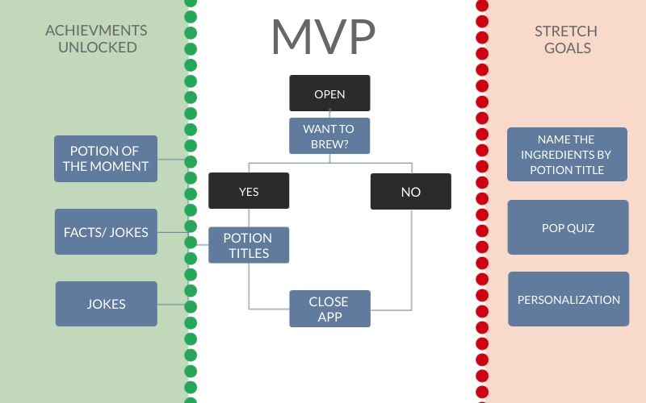

About Us.

Strengths
- Communication
- Ownership
- Support
- Unity
- NO MERGE CONFLICTS!!
opportunities
- Muggle Errors
- Understanding of Lambda
- No public repository
- Alexa Docs
- No version control on Lambda
- Take note 201 & 301!!!
Problem Domain
We are solving the classic philosophical problem of what potions one could brew if given the chance to travel to the legendary Hogwarts.
To that end, our group created the gitSchooled Alexa app. We write our code for the muggles, now by the muggles. We crowd sourced the potions in our database & had Alexa flawlessly read them off. If you get lucky, Alexa may also choose your potion as her favorite Potion of the Moment and teach the user how to brew it.
But wait, there's more - Alexa will also school you on the best facts from the Harry Potter movies, keep you entertained with jokes, even tell you a pick-up line or two, but only if she really likes you.
If you listen closely, legend says that Alexa will even tell you the weather at Hogwarts & play you a quick snip of what it sounds like at Hogwarts to fully imerse you in the Wizarding World.
Stretch Goals

Demo